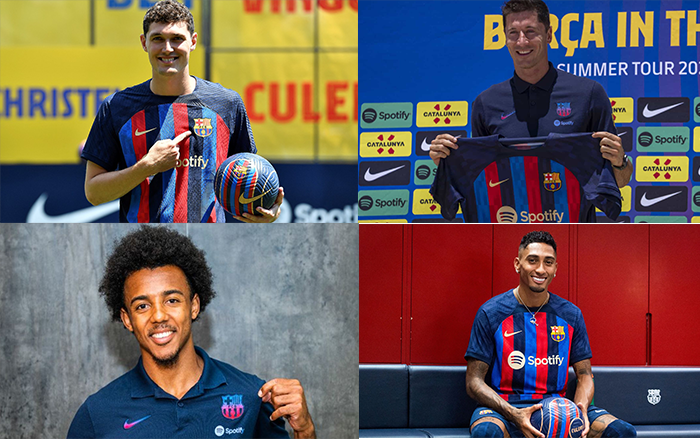

Barcelona em campo
Neste domingo (21/08/22) Barcelona enfrentará o time basco, Real Sociedad, pela segunda rodada do campenonato espanhol, La Liga, na casa desse time que um duelo duro quando se trata de enfrentar o time basco em casa.

Com o time já relacionado para a partida de domingo, percebemos a ausencia do nome de Kounde novamente entre os nomes do elenco. Segundo a imprensa espanhola, o atleta foi informado após o treino de sábado que ficaria de fora.
O Barça passa por uma dificuldade financeira tendo que fazer estratégias financeiras, que eles chamam de alavancas para continuar contratando para a temporada e continuar sendo uma equipe competitiva, tanto no campeonato espanhol, quanto na Champions League, na ultima temporada o Barcelona acabou caindo na frase de grupos e, fincanceiramente, o Barcelona não contava com a falta de dinheiro que se ganha ao avançar na Champions League
O time do Barcelona buscou jogadores nessa janela de transferencia e um dos jogadores foram, Christensen, Kounde, Lewandowski, Raphinha, Pablo Torre e Franck Kessié
Kounde futuro incerto
O grande problema de Kounde não estar relacionado para a partida de domingo (Hoje) é que o jogador pode nao continuar na catalunha para jogar defendendo o escudo do Barcelona. Segundo o rádio "Cadena SER" existe uma clausula no contrato de Koundé que permita ele deixar o clube caso ele nao esteja inscrito em La Liga até o dia 1º de setembro, quando a janela de transferencia se encerra

Barcelona conseguiu montar um tive competitivo com essas contratações e com a excelente atuação de Xavi Hernandez como tecnico, que desde sua chegada ao Barcelona na ultima temporada, a equipe conseguiu 74% de aproveitamento em La Liga, saindo da 7º posição para um final de campeonato em 2º posição, ficando atrás somente em aproveitamento do atual campeão Real Madrid, que teve 82% de aproveitamento
O video acima refere-se ao primeiro jogo do campeonato espanhol de Barcelona x Rayo Vallecano, que ambos os times conquistaram somente um ponto no campeonato. Na partida o time de Xavi Hernandez veio procurando o seu atul camisa 9, Lewandowski, porém o time do Rayo congestionou com muitos jogadores o meio de campo defensivo, sendo mais dificil de encontrar o camisa 9. Veja o video para melhores informações